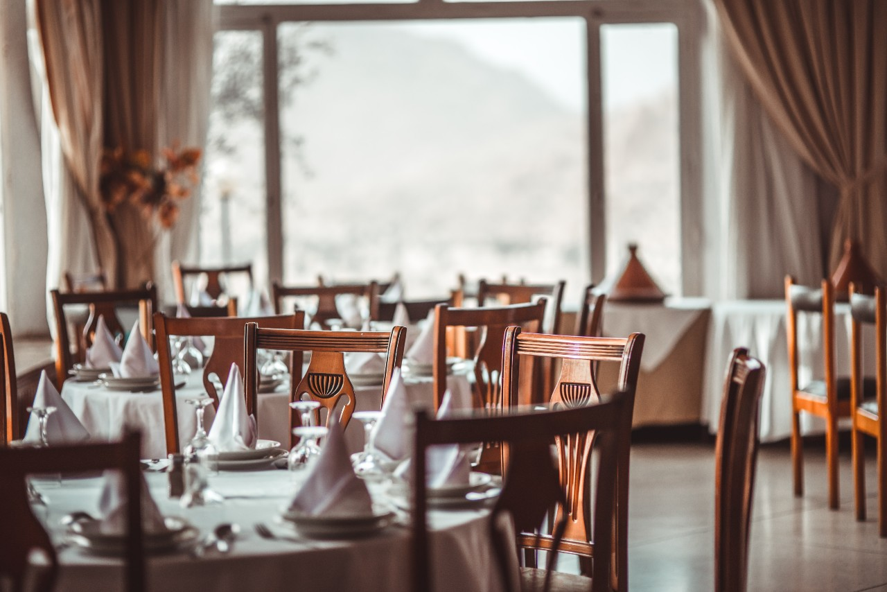

Bladet Kafé
Om Oss

Bladet er en økologisk og fornuftig kafe som åpnet i 1986. Kafeen er kjent for å ha et godt og næringsrikt utvalg til alle og en hver. Åpningstidene er hver dag fra 08:00 til 18:00. Bord og retter kan forhåndsbestilles slik at du kan ankomme til et varmt og velkomstlig måltid. Du finner Bladet Kafe i Olsengata 37, rett ved siden av to store eiketrær. Vi ønsker deg hjertelig velkommen til Bladet Kafe!